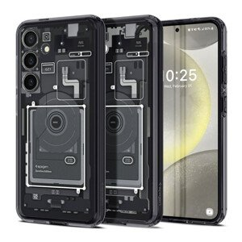
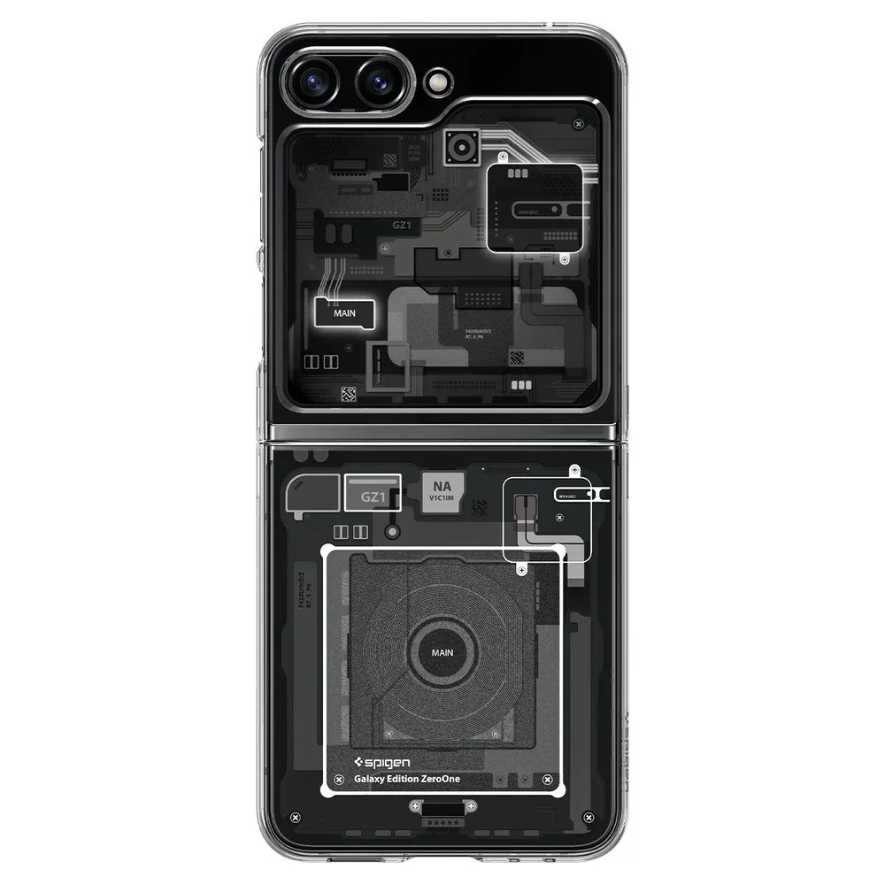

Készítette: Szél Ferenc
Kezdőlap | Telefon típusok | Technológia
A modern okostelefonok belsejében rendkívül fejlett technológiák találhatók. A gyors processzorok lehetővé teszik a több alkalmazás párhuzamos futtatását. A nagy felbontású kijelzők gyönyörű képet adnak, a fejlett kamerák pedig már-már profi szintű fotókat készítenek.
 | Típus | Kijelző | Akkumulátor | Ár |
|---|---|---|---|
| iPhone 15 | 6.1" OLED | 3200 mAh | 450 000 Ft |
| Samsung Galaxy S23 | 6.4" AMOLED | 3900 mAh | 350 000 Ft |
| Xiaomi 13 | 6.36" AMOLED | 4500 mAh | 280 000 Ft |
A jövő telefonjai még ennél is többre lesznek képesek. Hajlítható kijelzők, mesterséges intelligencia, környezetbarát akkumulátorok mind részei a fejlődésnek. Erről többet olvashatsz a TechRadar oldalán.